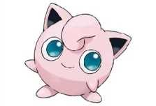

Pokemon introduction
(胖丁)
- Cute Charm
- Competitive
- Friend Guard(DW)
(喵喵)

- Pickup
- Technician
- Unnerve (DW)
(可達鴨)

- Damp
- Cloud Nine
- Swift Swim (DW)
(小水龜)

- Torrent
- Rain Dish (DW)
| Pokemon Name | Picture | Type | Species | Abilities | Description |
|---|---|---|---|---|---|
| Jigglypuff
(胖丁) |
 | Fairy | Balloon Pokémon |
|
Jigglypuff (Japanese: プリン Purin) is a dual-type Normal/Fairy Pokémon introduced in Generation I. |
| Meowth
(喵喵) |
|
Normal | Scratch Cat Pokémon |
|
Meowth (Japanese: ニャース Nyarth) is a Normal-type Pokémon introduced in Generation I. |
| Psyduck
(可達鴨) |
|
Water | Scratch Cat Pokémon |
|
Psyduck (Japanese: コダック Koduck) is a Water-type Pokémon introduced in Generation I. |
| Squirtle
(小水龜) |
|
Tiny Turtle Pokémon |
|
Squirtle (Japanese: ゼニガメ Zenigame) is a Water-type Pokémon introduced in Generation I. | |
| Reference：FANDOM | |||||